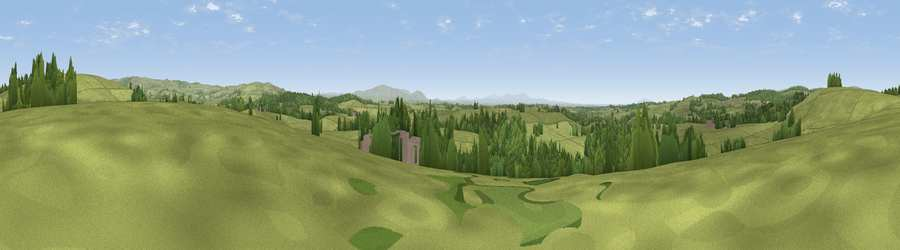

Viewpoint near Bewcastle
#18400 in England · top 42% of its area beats it · near BewcastleThe view, rendered

A 360° render of this exact spot computed from the terrain model, tree cover and land cover — summer colours, afternoon light, calibrated against photographs of famous viewpoints. Real trees, hedges and buildings will differ in detail.
The panorama
Grey silhouette: terrain skyline in each direction (720 bearings, Earth curvature and refraction included). Dashed green: skyline with trees (+15 m) and buildings (+8 m) as obstacles. Blue strip: how far the ground is visible on each bearing.
Where the view opens
Wedge length = distance to the farthest visible ground on that bearing (vegetation-aware). Rings at 10, 25 and 50 km.
What fills the view
83% grassland · 16% woodland · 1% cropland ·
Angular shares of the visible panorama (visual magnitude), not map area. Landscape diversity 0.23 (0–1 Shannon).
Key numbers
More beautiful places nearby
The staircase of upgrades: each row has a higher view potential than everything closer. Driving times are estimates from straight-line distance, calibrated against real road routing — check an actual route before setting out.
| Place | Direction | Drive | Score |
|---|---|---|---|
| Viewpoint near Bewcastle | NNW · 1 km | ~3 min | 58.8 |
| Roadhead Hill | NNE · 1 km | ~4 min | 66.4 |
| Viewpoint near Bewcastle | E · 5 km | ~12 min | 69.2 |
| Viewpoint near Bewcastle | ESE · 6 km | ~13 min | 71.8 |
| Viewpoint near Bewcastle | ESE · 6 km | ~13 min | 73.2 |
| Viewpoint near Bewcastle | NE · 9 km | ~17 min | 78.9 |
| Viewpoint c11644_7156 | NE · 11 km | ~20 min | 80.8 |
| Barrock Fell | S · 27 km | ~43 min | 81.1 |
55.05517, -2.76192 · source: screening · position refined by local search. Computed location — check access rights before visiting.